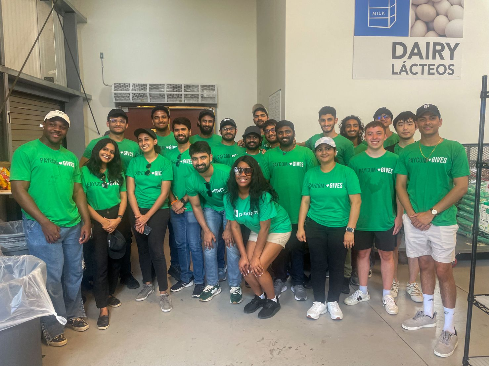

Today at CitySquare, I had the distinct privilege of representing Paycom's community service commitments, an experience that left an indelible mark on me. Being an intern at Paycom is so much more than just honing my technical and professional skills. It's about immersing oneself in a holistic environment where tech innovation seamlessly merges with a heartfelt commitment to the community. From the moment I joined Paycom, I've observed how they consistently prioritize the well-being of the community. At CitySquare, as I interacted with different individuals and witnessed the direct impact of our initiatives, the sense of purpose and responsibility towards fostering a better society became even more evident. I am reminded that in the tech world, it's not just about advancing our technical knowledge; it's about leveraging that knowledge to better the lives of those around us. Being amidst the energetic buzz of Paycom's community service day, I felt a profound sense of pride and gratitude. The way Paycom encourages its employees, even interns like myself, to take the lead in these initiatives is commendable. It provides us with invaluable experiences and growth opportunities that go beyond the confines of the office. This isn't just any internship; it’s a journey of discovering the symbiotic relationship between technological advancement and community betterment. Every day, I am inspired by Paycom's ethos and vision, and today's event at CitySquare has further cemented my admiration for this company. I eagerly anticipate contributing more and delving deeper into these two intertwined worlds of tech and community service in the coming months!
Today at GreenPark, I had the unique privilege of representing Paycom's environmental conservation efforts, an experience that profoundly resonated with me. Being an intern at Paycom is so much more than just mastering my chosen field. It's about diving deep into a holistic environment where technological innovation is beautifully balanced with a commitment to the planet. Since my first day at Paycom, I've been struck by their steadfast dedication to environmental sustainability. At GreenPark, as I participated in tree-planting initiatives and learned about local ecosystems, the significance of corporate responsibility in preserving our environment became crystal clear. I've always believed that in our tech-driven world, it's crucial not just to progress but to ensure that our advancements are harmonious with nature. As I stood amidst the vibrant hues of GreenPark, soaking in the energy of Paycom's conservation day, feelings of pride and gratitude surged within me. The manner in which Paycom empowers its team members, including interns like me, to be at the forefront of such significant initiatives is truly laudable. This experience provides lessons that go far beyond the regular scope of an internship. This isn't merely an internship; it's a journey of understanding the intricate balance between technological growth and environmental stewardship. With each passing day, I am more inspired by Paycom's commitment and vision, and today's event at GreenPark has deepened my respect and enthusiasm for the company. I'm excited about the future, eagerly looking forward to contributing to and witnessing the harmonious blend of tech and environmental care!